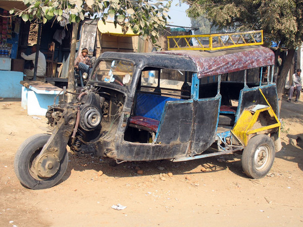
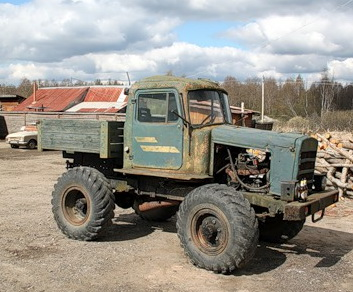
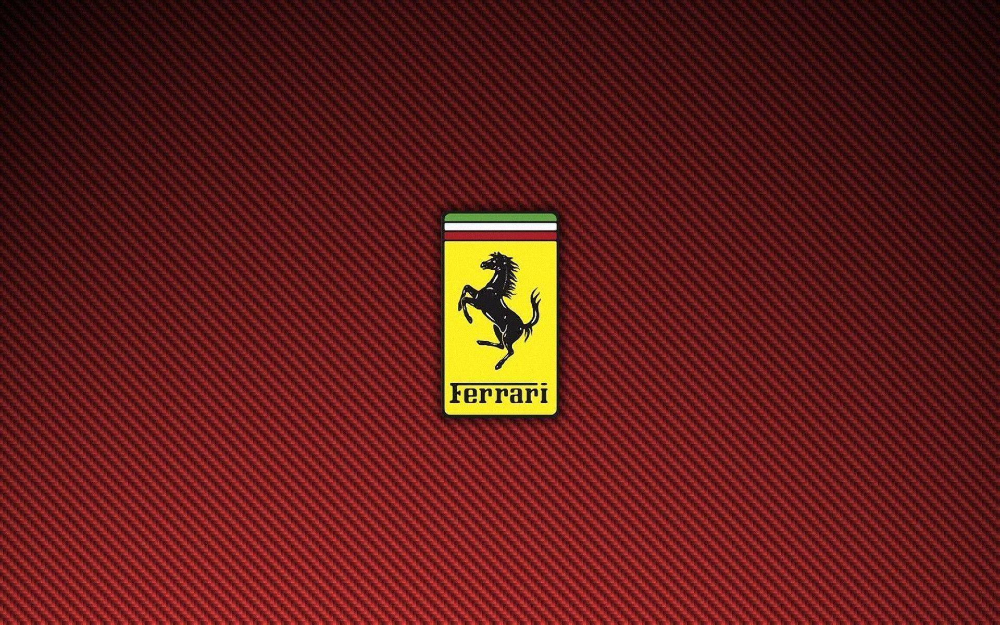

 
ferrari >Энцо Ансельмо Феррари (итал. Enzo Anselmo Ferrari; 18 февраля 1898 — 14 августа 1988) — итальянский конструктор, предприниматель и автогонщик. Основатель автомобилестроительной компании «Феррари» и одноимённой автогоночной команды.